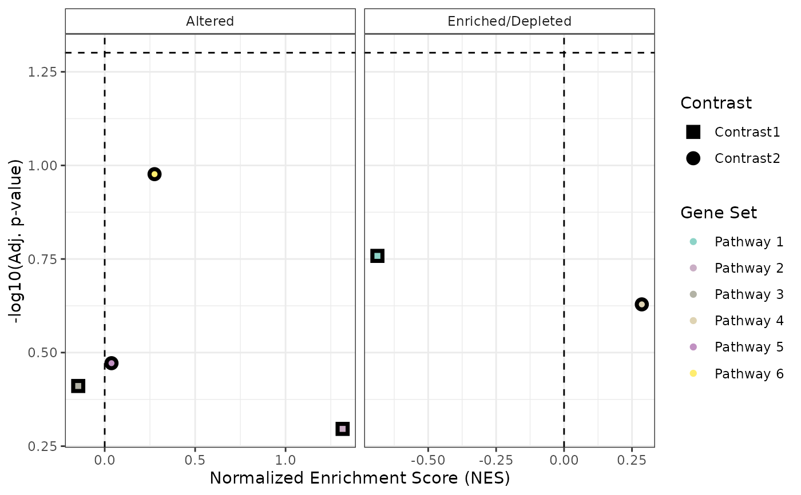

This function creates a scatter plot visualizing multiple GSEA (Gene Set Enrichment Analysis) results across different contrasts. Each point represents a pathway, where:
The x-axis corresponds to the Normalized Enrichment Score (NES).
The y-axis corresponds to the significance level (-log10 adjusted p-value).
The color represents different pathways.
The shape represents different contrasts.
A dashed horizontal line marks the chosen significance threshold.
Arguments
- GSEA_results
A named list of data frames, where each data frame contains GSEA results for a contrast. Each data frame should have the columns:
NES(Normalized Enrichment Score),padj(adjusted p-value), andpathway(pathway name). Output fromrunGSEA.- sig_threshold
Numeric, default = 0.05. Adjusted p-value threshold for significance. A dashed horizontal line is drawn at this threshold.
- PointSize
Numeric, default = 4. Size of the plotted points.
- widthlegend
Numeric, default = 16. Controls the width of pathway labels in the legend.
Examples
# Example GSEA results (mock data)
GSEA_results <- list(
"Contrast1" = data.frame(
NES = rnorm(3),
padj = runif(3),
pathway = paste("Pathway", 1:3),
stat_used = c("t", "B", "B")
),
"Contrast2" = data.frame(
NES = rnorm(3),
padj = runif(3),
pathway = paste("Pathway", 4:6),
stat_used = c("t", "B", "B")
)
)
# Generate the plot
plotCombinedGSEA(GSEA_results, sig_threshold = 0.05, PointSize = 4)
